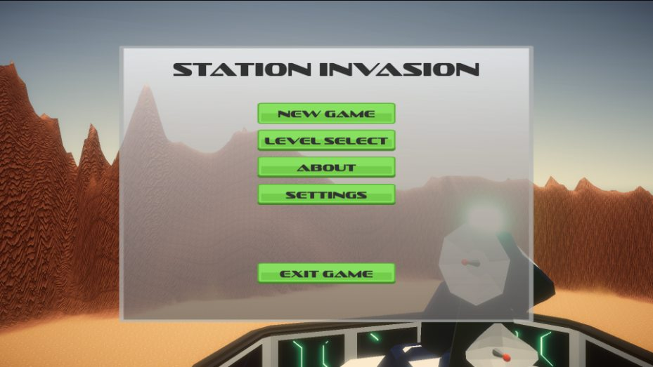

No man's land
Face the trenches of World War I in a PS1-style first-person game about the fear of combat.
View gameBrowse the games below, or filter by the platform you play on.
Face the trenches of World War I in a PS1-style first-person game about the fear of combat.
View game
Become SCP-173. Hunt the humans inside a containment facility in this role-reversal horror game.
View game
Take on a world ruled by bosses. Set your own respawn point and use electrical platforms to cross the toughest sections.
View game
Follow the routine. Question everything. An ordinary day turns uneasy in this first-person horror game.
View gameNo games for this platform yet. Choose another platform to see more games.

Take control of an astronaut and collect three crystals in a focused 3D platforming challenge.
View game
Choose between two abilities and change the course of each run in this arcade top-down shooter.
View game
Fight through a sequence of 3D shooter levels, with redesigned encounters and an options menu.
View game
Play the platforming and puzzle foundations of CubeGame in the original alpha.
View game